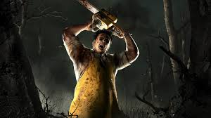

Los mejores killers de Dead by Daylight
Con una presencia intimidante en común, los asesinos de Dead by Daylight son muy diferentes entre sí, con poderes y apariencias totalmente distintas y creativas. Conoce aquí cuales son los más fuertes del juego.